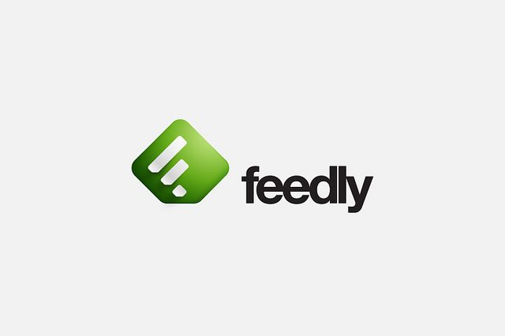

Retour Accueil
Veille Technologique
Sujet
Utilisation de JavaScript dans le développement web et les jeux interactifs.
Pourquoi ce sujet ?
Ce sujet est directement lié à ma formation en BTS SIO option SLAM.
J’utilise JavaScript dans plusieurs projets comme mon portfolio, mon mini-jeu de devinette
et mon jeu Pokémon.
Cette veille me permet de suivre les évolutions du langage et d’améliorer mes compétences.
Dispositif de veille

Utilisation de Feedly pour suivre les flux RSS de sites spécialisés.
👉 Accéder à Feedly

AUTO-FORMATION
Suivi de tutoriels vidéo sur YouTube :
Apprentissage du code HTML

Analyse de projets et tendances sur GitHub :
👉 Trending JavaScript
Je consulte ces sources régulièrement afin de suivre les évolutions de JavaScript et les bonnes pratiques.
Sources fiables
Axes de veille
1. JavaScript
- JavaScript dans le développement web
JavaScript permet de rendre les sites dynamiques : gestion des événements,
manipulation du DOM et interactions utilisateur.
Des frameworks comme React ou Vue.js sont utilisés pour créer des applications web modernes.
- JavaScript dans les jeux interactifs
JavaScript permet de créer des jeux directement dans le navigateur grâce à Canvas ou WebGL.
Il est utilisé pour gérer les animations, la logique du jeu et les interactions.
2. Bonnes pratiques et performances
La veille permet de découvrir les bonnes pratiques :
optimisation du code, gestion des événements, organisation du code (modules)
et amélioration des performances.
Lien avec mon parcours
Cette veille est directement liée à mon BTS SIO SLAM.
Elle m’aide dans mes projets :
- mini-jeu de devinette (logique JavaScript)
- jeu Pokémon (interactions et événements)
- portfolio (interface dynamique)
Elle me permet d’améliorer mes compétences en développement web.
Conclusion
Cette veille technologique m’a permis d’approfondir mes connaissances en JavaScript.
J’ai amélioré ma maîtrise des événements, des interactions et de la logique de programmation.
Elle est directement utile pour mon BTS et mon futur métier de développeur.
Elle m’a aussi permis de comprendre comment créer des systèmes interactifs,
en lien avec le thème de mon portfolio inspiré de Matrix.